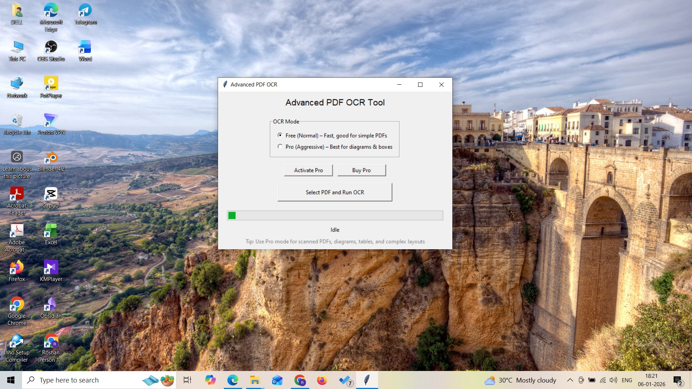
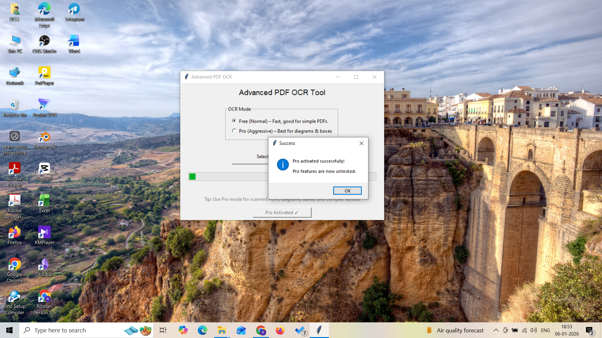
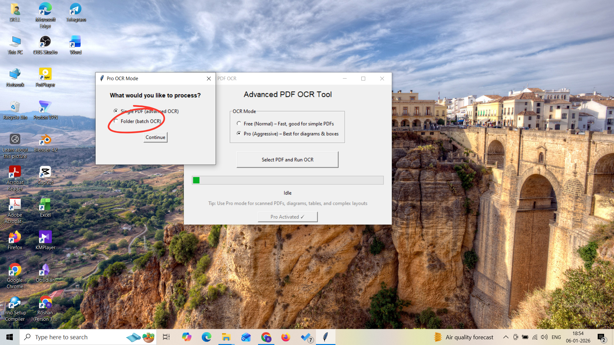
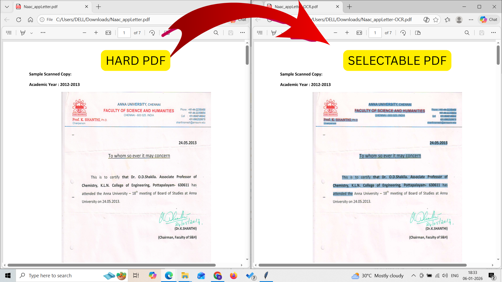

If you have ever tried to copy text from a scanned PDF and failed, you are not alone. Many PDFs — especially textbooks, accounting books, and old documents — are hard-scanned.
A hard-scanned PDF is essentially a collection of images. There is no real text layer inside the file. This makes normal OCR tools struggle or fail completely.
Most OCR tools are optimized for clean documents. When the scan quality is poor, they produce garbled text or nothing at all.
Hard-scanned PDFs require a more aggressive OCR approach:
AdvancedPDFOCR is a Windows desktop tool designed specifically for hard-scanned PDFs where normal OCR fails.
Below are real screenshots from AdvancedPDFOCR running on Windows. These examples show how the tool handles difficult, hard-scanned PDFs.

Main application interface with OCR mode selection.

Pro (Aggressive) OCR mode designed for hard-scanned documents.

Multiple PDF's Batch OCR Processing.

Results after Advanced OCR.